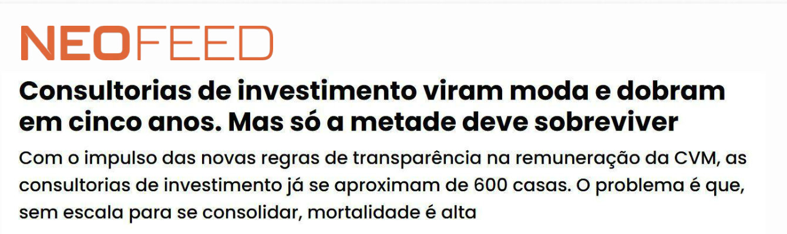
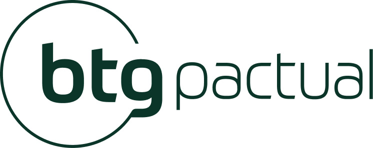
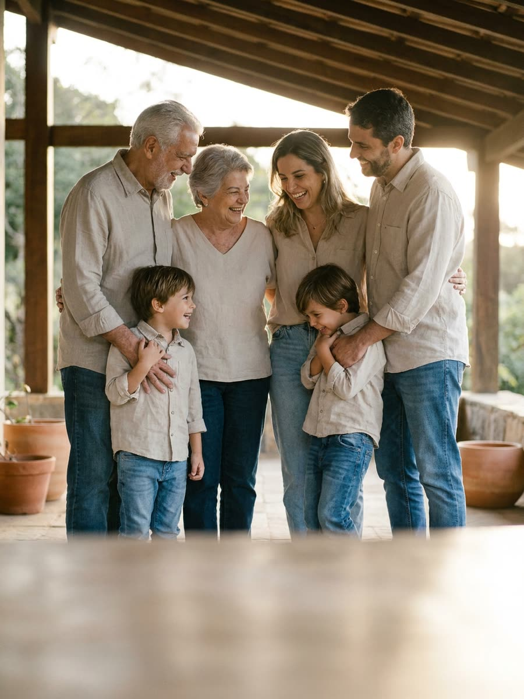
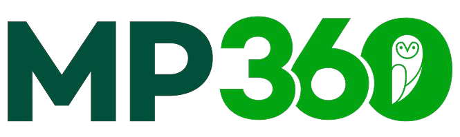
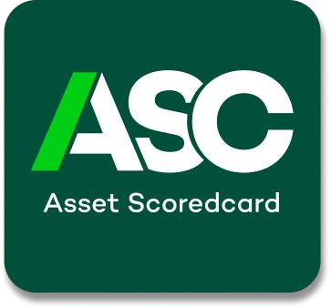
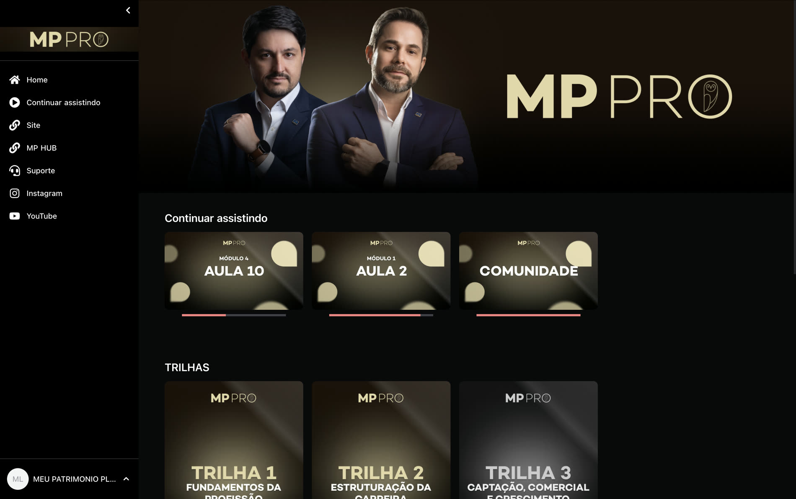
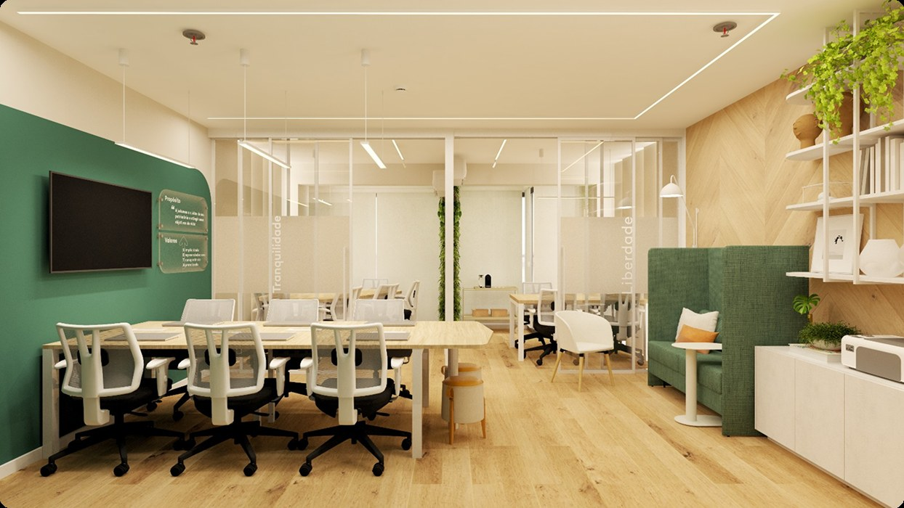
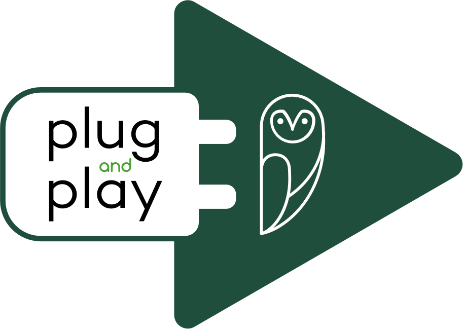
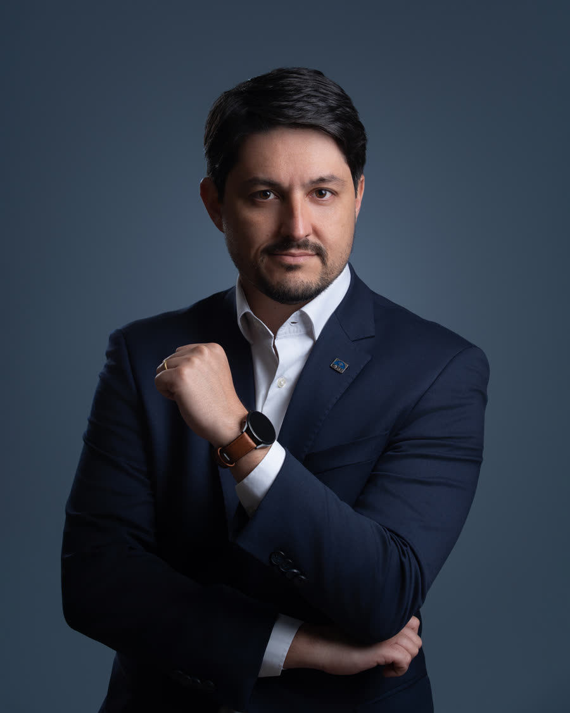

FSC
Uma família não cabe em um saldo.
Financial Scorecard: diagnóstico e planejamento financeiro. Primeiro compreender, depois dar prazo e prioridade a cada objetivo.
Método proprietário do ecossistema MP Intelligence
Modelo Multi-plataforma, tecnologia proprietária e suporte para crescer sem abrir mão da relação com o cliente.
O desafio das consultorias

O ideal é ter uma estrutura robusta e eficiente. É exatamente isso que a Rede entrega pronto.
Mercado de consultoria de investimentos
Um modelo consolidado lá fora e em plena formação aqui. Quem entra agora constrói junto.
Mercado de consultoria de valores mobiliários
Consultores credenciados na CVM| Ano | Pessoa Natural | Pessoa Jurídica |
|---|---|---|
| Até 2017 | 293 | 81 |
| 2018 | 361 | 89 |
| 2019 | 437 | 98 |
| 2020 | 555 | 110 |
| 2021 | 720 | 155 |
| 2022 | 948 | 204 |
| 2023 | 1.215 | 262 |
| 2024 | 1.626 | 370 |
| 2025 | 1.953 | 445 |
| 2026 (parcial) | 2.288 | 516 |
*2026 parcial. Fonte: Consultores de Valores Mobiliários — Informação Cadastral, Portal de Dados Abertos da CVM.
Modelo Multi-plataforma
Uma visão patrimonial. Dezesseis caminhos de acesso.





Rede Meu Patrimônio
Ecossistema para cuidar do patrimônio, com transparência, liberdade e inovação.
O que fazemos
Do primeiro passo em educação financeira à governança de um patrimônio que atravessa gerações. O consultor da Rede acompanha a família em cada estágio, sempre com o mesmo método.
Conhecimento para cuidar das finanças e tomar melhores decisões.

Confiança para alcançar seus objetivos e cuidar das finanças.

Tranquilidade de quem está investindo bem o seu dinheiro.

Segurança para cuidar do patrimônio familiar por gerações.
A escada completa fica disponível para o consultor desde o primeiro dia. Você escolhe onde a família entra.
OneStopWealth
Planejamento, investimentos, educação e inteligência patrimonial conectados por um único método.


O plano parte dos objetivos de vida.
Cada carteira realiza um objetivo definido.
Os módulos
Financial Scorecard: diagnóstico e planejamento financeiro. Primeiro compreender, depois dar prazo e prioridade a cada objetivo.
Método proprietário do ecossistema MP Intelligence
Asset Scorecard: análise de investimentos e carteira. O objetivo define o horizonte, o comitê emite os pareceres e os limites vêm antes da alocação.
Método proprietário do ecossistema MP Intelligence
Dados, análises e ferramentas em uma única rotina.
Orçamento, investimentos e imóveis na mesma visão.

A escola da Rede: trilhas que acompanham o consultor da entrada na profissão ao crescimento da própria carteira.
No currículo
Base regulatória · Princípio fiduciário · Conflito de interesses · Remuneração transparente · Governança pessoal do consultor
Como funciona
Aulas curtas, com progresso registrado, e comunidade para as dúvidas que não caem em aula. Professor responsável: Gabriel Liberato, CFP®, CNPI e consultor de investimentos CVM.
A tecnologia não substitui o consultor. Amplia sua capacidade.Tecnologia para potencializar especialistas. Especialistas para cuidar do patrimônio.
Plug and play
Você mantém o protagonismo e a relação com o cliente. A Rede entrega metodologia, tecnologia, processos e suporte para a operação rodar desde o primeiro dia.
Você cuida das pessoas. A Rede sustenta a operação.


Você atua dentro de um escritório da Rede, com método, tecnologia e suporte de retaguarda desde o primeiro atendimento.
Você conduz o seu próprio escritório usando a estrutura da Rede, sem montar operação, tecnologia e formação do zero.
Quem constrói a Rede

Economista, CFP® e consultor de investimentos CVM. Fundador e CEO da Meu Patrimônio, embaixador da Planejar e diretor da ABCVM.
CFP®, CNPI e consultor de investimentos CVM. Fundador da Meu Patrimônio e professor responsável pelo MP PRO.
Nossa bandeira
Um atendimento sem conflito de interesse: a recomendação nasce do objetivo de vida do cliente, não da prateleira de produtos.
A verdade é o alicerce de um mercado financeiro sólido e confiável. Quando agimos com transparência e integridade, todos ganham. Investidores, empresas e reguladores, juntos, trilham um caminho seguro e próspero.
Vamos nos comprometer com a verdade. Esse é o caminho para um mercado mais forte e justo.
O profissional do mercado financeiro sendo refém de adaptar suas crenças e valores para manter um mínimo de renda e ganhos.
O cliente sendo alvo de indicações de produtos que não fazem o menor sentido para os objetivos de vida dele.
A cultura do conflito de interesses tem que acabar.
Sabemos que os bons profissionais já estão cansados de trabalhar sozinhos, sem estrutura, e com metas desalinhadas com os objetivos dos clientes.
Os bons profissionais precisam de estabilidade e ganhos previsíveis e de não pôr à prova suas ideologias em troca de migalhas.
Sabemos que esses profissionais precisam ser valorizados. Nossa missão é encontrá-los.
O manifesto em vídeo.
Parceiros da Rede
O que muda quando tecnologia, processos e pessoas trabalham na mesma direção.
Como a estrutura trabalha
Onde estamos
A nossa missão é estar em todos os estados Brasil!
Candidatura · Consultor
A próxima conversa é com o time de expansão.